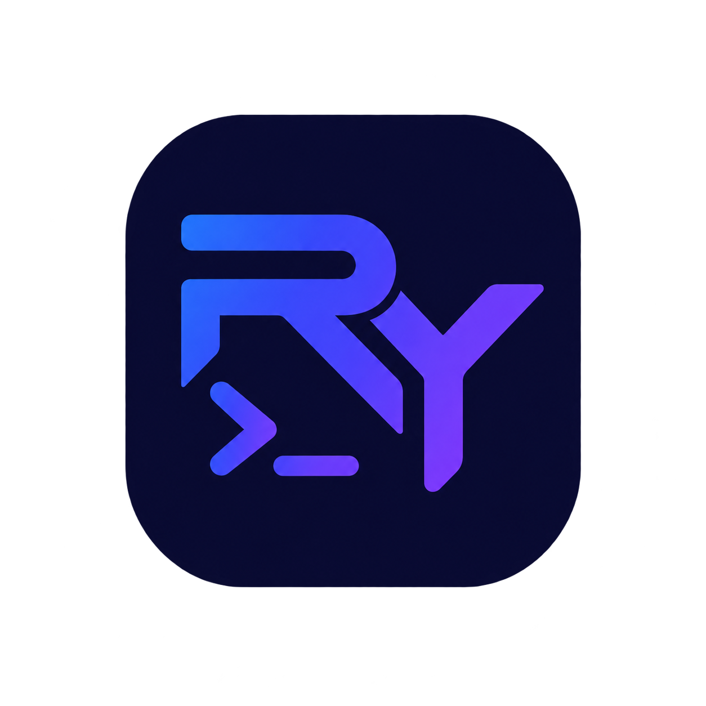

RY
terminal
ENTORNO INFORMÁTICO
SISTEMA ACTIVO
Buscar herramientas y acciones
Ctrl K
¿Qué quieres practicar?
🐧
Linux
Terminal Linux simulada
🪟
Windows
CMD o PowerShell
Elige el intérprete de Windows
CMD
Símbolo del sistema
PowerShell
Cmdlets y objetos
← Toolbox
Libre
Biblioteca
Retos
Herramientas
📸 Descargar captura
↺ Reiniciar
Todos
Linux
CMD
PowerShell
RYterminal